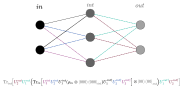

Quantum machine learning is the extension of machine learning to the realm of quantum computation. Still in it's infancy (as are quantum computers), QML is a cutting edge field with, as of yet, undecided foundations. Several different approaches exist, including quantum kernels, support vector machines, and quantum neural networks. Currently implementable and effective models tend to utilize hybrid schemes, wherein classical machine learning techniques interact with quantum submodules to effectively get the best of both worlds (and as a result of limited QC hardware).
One proposed framework for quantum neural networks is that discussed in Kerstin Beer, et al's Training Deep Quantum Neural Networks.
The most general task a quantum circuit can do is perform some arbitrary unitary operation on an arbitrary dimensional space. Hence, an effective quantum neural network should aim to approximate an arbitrary unitary given some set of data \( (\vert\psi_i\rangle, V \vert \psi_i\rangle) \) where \(i\) ranges from 1 to \(N\) for \(N\) points of data. Effectively, then, our quantum network should be able to 'learn' to approximate what unitary operation is being performed given \(N\) 'snapshots' of it's action on some set of states.
The formalism developed in the aforementioned paper works with states represented as density matrices (neccessarily since we intend to take partial traces over hidden layers). Below, the basics of the framework are covered, closely following the presentation given by Ramona Wolf.
Our simple example of the model will consist of a two-qubit input state, one three-qubit hidden layer, and a two-qubit output state. The action of the first step is to take the tensor product of the arbitrary input state \(\rho_{in}\) with a fiduciary (cleanly initialized) state \(\vert 000\rangle \langle 000 \vert \), and then apply three unitaries of dimension \(2^{2+1}\) which act on the input state and the first, second, and third intermediate state vectors, respectively (with identity in the rest) and in that order (because unitaries won't neccessarily commute and the convention is to apply from top to bottom for each layer). The partial trace is then taken over the input state's Hilbert space. This resulting state is then tensor producted with the output state, which is also initialized as the ground state of a two-qubit Hilbert space. Two more \(2^{1+2}\) dimensional unitaries are then applied to the intermediate qubit's and the top and bottom, respectively (in order from top to bottom), and the partial trace over the intermediate state space is then taken. The resulting \(2^{2}\) dimensional state is then the output of this simple model.
The cost is then defined as the fidelity averaged over the output states and the corresponding training data states, as below: \[C =\frac{1}{N}\sum_{i=1}^{N}\langle \psi_i\vert V^{\dagger} \rho_i^{out}V\vert\psi_i\rangle \] Note that, since fidelity is one when two states correspond exactly, we wish to maximize this cost function (as opposed to the usual case in classical machine learning where we wish to minimize the corresponding cost function).
The issue now is training, which can be done iteratively by updating the network's constituent unitaries via the following relation, parametrized by the step size \(\epsilon\): \[U_j^n \rightarrow e^{i\epsilon K^n_j}U^n_j\]